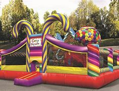

Daycare owners are famous for knowing the best arts and crafts projects. What about holding a lesson over Zoom? You can give parents a short shopping list or,
for a small fee, create boxes with everything that’s needed to complete the project and have them ready for pick-up. This idea is especially good in chilly
climates, when families may be looking for something to do on snowy or rainy afternoons. When you provide a solution to a parent’s problem, they’ll come to see
that you can help in other ways, too.
Outdoor storytime
Spread out cushions on the ground at a park or outdoor café for children to listen to a story you read aloud. You’ll keep the kids engaged and give parents a break.
Provide refreshments and information about your programs that the parents can enjoy while their children are absorbed in the storybook. Have fun! It was great to
be outside, reading by the river or on the grass by a playground. It really lent a looser atmosphere than being in the library. Kids could run around and they
seemed to be in a better mood than in the winter (the beautiful weather helped mine too!)
Nature scavenger hunt
If you’re lucky enough to have some natural parks in your area, you can organize a nature scavenger hunt for families. Most everyone has a smartphone with a camera
these days, so create a list of things that parents (or their children) can take pictures of. Get creative: they can look for a rock that’s shaped like a heart,
a fuzzy animal, a leaf with more than one color on it, or a purple flower. Have participants meet at a specific time to get their instructions. Then, set a timer
and see who returns with all the pictures first. One of the prizes can be a discount on your daycare program.
Parent-child yoga classes
Almost every parent would love some time to just breathe — conveniently, that’s exactly what yoga classes offer. Collaborate with a yoga teacher in your area to hold
a virtual class that’s designed for both children and parents.
The key to engaging children in a yoga class is to honor their limited attention span. Trained child yoga teachers can make stretching and breathing into a game
that everyone will love.

Playground Candyland
Sure, you could just set up kid-friendly board games in an outdoor environment, but that’s not quite as fun as this. Bring the board game to life! Use temporary
ground paint to create squares that families can advance through when one of your team members rolls the dice. You can make Chutes and Ladders to get kids climbing
and sliding make silly hats for participants to wear, and have prizes at the end for those who complete the game. By keeping it organized and outdoors, it’s possible to
follow safety protocols while creating a unique activity for all ages.